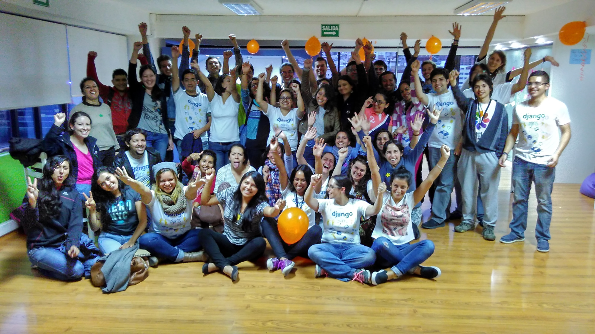

Bienvenidos!
4-5, 8-9 de Marzo, EPN, Quito
Gracias!
- Auspiciantes y Colaboradores == coffee-break, adesivos etc.
- Equipo de organización y voluntários
- Todos ustedes
djangogirls <3

120 inscripciones!

El mejor de Python: la comunidad!
Avisos
- Coffee-break: 30min no sólo para comer! Para conocerte ;)
- Camisetas a venta en el quiosco de regístro
- Utilice #pyuio en Twitter y Facebook